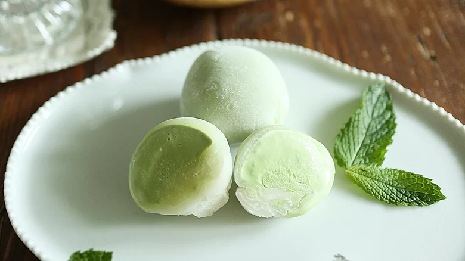

Mochi

Description
Mochi is a Japanese rice cake made of mochigome, a short-grain japonica glutinous rice, and sometimes other ingredients such as water, sugar, and cornstarch. The steamed rice is pounded into paste and molded into the desired shape. In Japan, it is traditionally made in a ceremony called mochitsuki.
Ingredients
- Glutinous rice flour
- Water
- Sugar
- Powdered sugar
- Cornstarch (or potato starch)
Steps
- Freeze ice cream balls: Place a piece of parchment paper on a cookie sheet. Working quickly, use a small ice cream scoop to scoop ice cream balls and place them on the parchment paper. Be sure to pack the ice cream tightly in the scooper, leaving a flat edge on the ice cream so that it will sit flat on your cookie sheet. Freeze for 1 hour.
- Make mochi: Combine flour, sugar, and powdered sugar in a microwave safe bowl. Add water and stir well, until smooth. Cover the bowl with plastic wrap and microwave mochi dough for 1 minute. Wet your spatula to prevent sticking and use your spatula to repeatedly fold the mixture. Cover, and microwave again for 1 minute. Fold the dough again and microwave for 30 more seconds. The mochi should look slightly shiny and if it doesn’t, microwave for 30 more seconds.
- Roll mochi dough into rectangle: Place a piece of parchment paper on the counter and dust it with a layer of cornstarch. Use a rubber spatula to scrape the mochi dough from the bowl and onto the parchment paper (keep in mind that it will be very hot so be careful not to touch it). Dust the top of the dough ball with cornstarch. Use a rolling pin to roll the mochi dough into a large rectangle, about ¼ inch thick. If the dough sticks at all while rolling, continue to dust the top with cornstarch to prevent sticking. Place the parchment paper with the rolled out dough on it, onto the cookie sheet and refrigerate for 30 minutes.
- Fill mochi with ice cream: Remove the dough from the fridge and use a round biscuit cutter (about 3 inches) to cut circles in the dough. Your circles need to be big enough to pinch the dough around the ice cream. Pick up one circle of dough and gently brush off the cornstarch from the top (I like to use a dry pastry brush to do this). Working with one scoop of ice cream at a time, (keep the rest in the freezer so they don’t melt), place one ice cream scoop in the center of the mochi and gently press the dough around the ice cream. Pinch the edges of the mochi to seal it. Place mochi on a piece of plastic wrap bringing the corners of the plastic wrap to the center and twisting it tightly at the top.
- Freeze: Place mochi back in the freezer with the rolled plastic wrap side down. Continue with remaining dough and ice cream. Freeze mochi ice cream for at least 1 hour before eating. Once it’s frozen, store it wrapped in the plastic wrap and in a freezer safe bag or container in the freezer for up to 3 months. Allow the dough to thaw slightly before eating.
Source:https://tastesbetterfromscratch.com/mochi-ice-cream/
> back to homepage <